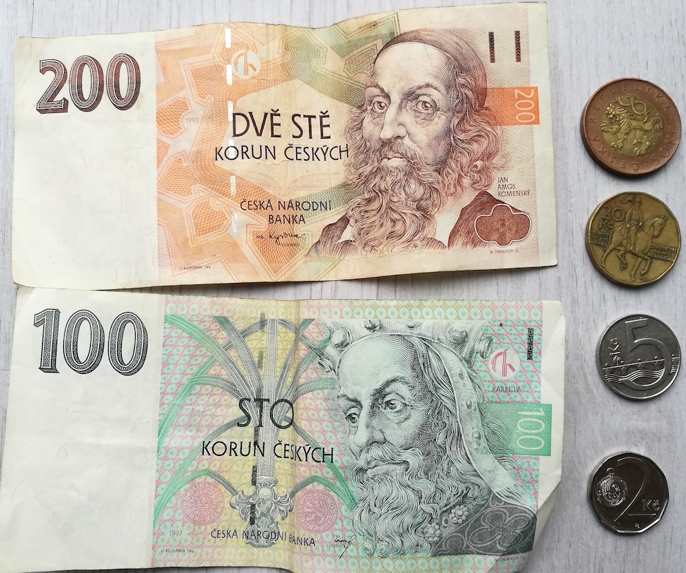
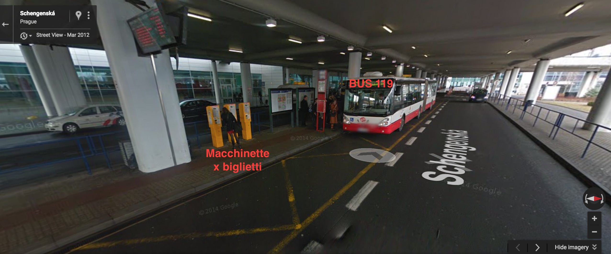

Indice
Consigli Pratici
- Clima: 5-8 gradi, quindi qualche grado in meno che a Bergamo, ma meno umido. Coprirsi bene perchè staremo all'aria aperta per molte ore. Vestirsi a strati perchè nei locali fa un caldo incredibile, come da loro tradizione.
- Scarpe: pesanti, comode, impermeabili. Le strade del centro son in ciottolato. Cammineremo moltissimo, anche in un parco in salita.
- Tappi orecchie: l'hotel è in centro, magari sabato notte ci saranno schiamazzi
- Non siamo a Praga per mangiare bene, se no si andava al Gattopardo. Ci arrangiamo, pranzi veloci.
- Siamo invece a Praga per bere bene, in particolare la birra pilsner che hanno inventato loro. La porta a fianco dell'entrata del nostro hotel è il Prague Beer Museum, che non è un museo ma una delle migliori birrerie di Praga, molto tranquilla. Pilsner Urquell e Gambrinus Premium sono le birre da bere.
- Probabilmente nell'hotel ci saranno prese Schuko.
Voli
Andata
- Papà+ (MPX, EasyJ) atterra giov 12:00
- Paolo (AMS, EasyJ) atterra giov 12:25
- Sarah (AMS, EasyJ) atterra giov 20:15
- Monia+ (BGY, Ryan) atterra ven 17:35
- Milena+ (MPX, EasyJ) atterra ven 20:55
Ritorno
- Paolo+ (AMS, EasyJ) parte dom 20:45
- Ripartono tutti (MPX, EasyJ) parte dom 21:25
Hotel
Residence Bene
Dlouhá 48/721, Prague 01
Telefono: +420 22 23 13 171
> Mappa dalla fermata metro Staroměstská all'Hotel.
Dlouhá 48/721, Prague 01
Telefono: +420 22 23 13 171
> Mappa dalla fermata metro Staroměstská all'Hotel.
Moneta
Corona ceca indicata come CZK (in inglese) o Kč (in ceco).
100 CZK valgono 3.7 euro.
1 euro vale 27 CZK.
Da 100 in su sono banconote.
Questi sono il 200, 100, 50, 20, 5, 2:
Come sempre il cambio va contrattato, la prima offerta è sempre inculata.
Non andate all'ufficio di cambio dell'aereporto perchè offre un cambio svantaggiosissimo.
Ci sono tanti bancomat e tutti funzionano con le nostre banche.
La commissione del bancomat dipende dalla vostra banca italiana.
Di solito le banche italiane offrono il tasso di cambio internazionale (cioè quello dei mercati finzanziari di quel giorno, cioè un cambio onesto) più una certa percentuale di ricarico (es. 1%). Più, nel caso di alcune banche, una commissione fissa di pochi euro (tipo 2 euro).
Io uso sempre i bancomat.
100 CZK valgono 3.7 euro.
1 euro vale 27 CZK.
Da 100 in su sono banconote.
Questi sono il 200, 100, 50, 20, 5, 2:

Ci sono uffici di cambio in ogni angolo del centro.Come sempre il cambio va contrattato, la prima offerta è sempre inculata.
Non andate all'ufficio di cambio dell'aereporto perchè offre un cambio svantaggiosissimo.
Ci sono tanti bancomat e tutti funzionano con le nostre banche.
La commissione del bancomat dipende dalla vostra banca italiana.
Di solito le banche italiane offrono il tasso di cambio internazionale (cioè quello dei mercati finzanziari di quel giorno, cioè un cambio onesto) più una certa percentuale di ricarico (es. 1%). Più, nel caso di alcune banche, una commissione fissa di pochi euro (tipo 2 euro).
Io uso sempre i bancomat.
Lingua
Incomprensibile.
Pero le lettere si pronunciano quasi tutte come le nostre a parte alcune eccezioni:
Pero le lettere si pronunciano quasi tutte come le nostre a parte alcune eccezioni:
- č si pronuncia c come in ciao
- c si pronuncia z come in zorro
- ž si pronuncia g come in giro
- ř si pronuncia come il rumore di un pezzo di carta appallottolato
Trasporti
> Bus, tram, metro
>Treni
Il biglietto dei mezzi costa 32 CZK.
Vale 90 min e si può cambiare mezzo (anche passae da bus a tram a metro).
Si può comprare nelle macchinette all'entrata della metro.
Oppure si può comprare direttamente dall'autista del bus o tram, ma con un sovrapprezzo se ricordo bene. Inoltre se l'autista non ha il resto è un problema.
Va convalidato.
Da aeroporto (terminal 2) al centro con BUS + METRO
Circa 30 min. Vi vengo a prendere io già coi biglietti dei mezzi pronti, ma in caso di sorprese è bene sapere il percorso.
Percorso:
Il BUS 119 si prende appena fuori dall'aerostazione, sotto il grande portico:
Il biglietto dei mezzi si può comprare nelle macchinette vicino al bus 119 (stessa foto da un'altra angolazione):
Meglio prendere il biglietto alle macchinette, ma come seconda opzione si può anche comprare dall'autista.
Se servono soldi: nell'aereostazione c'è un bancomat (meglio il bancomat che l'ufficio di cambio).
>Treni
Il biglietto dei mezzi costa 32 CZK.
Vale 90 min e si può cambiare mezzo (anche passae da bus a tram a metro).
Si può comprare nelle macchinette all'entrata della metro.
Oppure si può comprare direttamente dall'autista del bus o tram, ma con un sovrapprezzo se ricordo bene. Inoltre se l'autista non ha il resto è un problema.
Va convalidato.
Da aeroporto (terminal 2) al centro con BUS + METRO
Circa 30 min. Vi vengo a prendere io già coi biglietti dei mezzi pronti, ma in caso di sorprese è bene sapere il percorso.
Percorso:
-
BUS 119
Dall' aeroporto Terminal 2 si prende il BUS 119 (vedi foto più sotto).
Si scende al capolinea (cioè ultima fermata): Nádraží Veleslavín.
Dovrebbero essere 8 fermate, 14 minuti. -
METRO A
Scesi dal bus si scende a prendere la metro nella stazione metro Nádraží Veleslavín.
Questa fermata metro è nuova ed io non l'ho mai presa.
Comunque c'è una sola linea: METRO A.
Vale lo stesso biglietto del BUS.
Prendere la metro in direzione Skalka - Depo Hostivař.
Scendere alla 5a fermata: Staroměstská.
Le fermate sono:- Nádraží Veleslavín
- Bořislavka
- Dejvická
- Hradčanská
- Malostranská
- Staroměstská
-
Camminare fino all'hotel (900 metri)
Si passa direttamente nella piazza principale (Staroměstské náměstí).
> Mappa
Il BUS 119 si prende appena fuori dall'aerostazione, sotto il grande portico:
Il biglietto dei mezzi si può comprare nelle macchinette vicino al bus 119 (stessa foto da un'altra angolazione):

Servono 32 CZK. Anni fa prendeva solo moneta, no banconote.Meglio prendere il biglietto alle macchinette, ma come seconda opzione si può anche comprare dall'autista.
Se servono soldi: nell'aereostazione c'è un bancomat (meglio il bancomat che l'ufficio di cambio).
Giovedì 24
- Il papà e la mamma atterranno alle 12:00. Aspettano in aeroporto Paolo che atterra alle 12:25, senza prendere iniziative. Ci incontriamo nell'aerostazione vicino all'uscita.
- Andiamo all'hotel, lasciamo i bagagli.
-
Mangiamo qualcosa e poi giriamo in città.
TODO: aggiungere cosa vedere - Alle 19:40 vado a prendere Sarah all'aeroporto che atterra alle 20:15.
-
Dall'aeroporto andiamo direttamente al ristorante.
Magari questo:
Maestro
> Mappa
C'è il menù per giovedì sul sito e ci sono brodo di pollo, filetto di salmone con spinaci, fegato di maiale con pancetta e cipolla, palle di carne, pizze varie.
Venerdì 25
- Sveglia ore 6:30. Colazione in Hotel (inclusa). Sciacallaggio di panini per il pranzo.
- Escursione termica fuori porta a Kutná Hora.
-
Si prende il treno da
Hlavní nádraží a Kutná Hora-Sedlec/hl.n.
Treni in partenza alle: 8:06, 9:24, 10:06
> Orari - Screenshot
Il viaggio dura 1h1m. C'è almeno un cambio. Il biglietto costa circa 104 CZK, sconto per più persone scegliere "skupinová sleva". - Scesi alla stazione Kutná Hora-Sedlec/hl.n., si cammina (500 metri) fino all' Ossario di Sedlec.
- Poi si cammina fino in centro città (3 km) oppure si va in treno dalla stazione Kutná Hora-Sedlec/hl.n. a Kutná Hora město.
- A Kutná Hora possiamo camminare in centro e poi visitare la Cattedrale di Santa Barbara
-
Verso le 15:00 ritorniamo a Praga in treno.
Da Kutná Hora město a Hlavní nádraží.
Treni in partenza alle: 14:44, 15:32
> Orari - Screenshot
Il viaggio dura 1h7m. C'è almeno un cambio.
-
Si prende il treno da
Hlavní nádraží a Kutná Hora-Sedlec/hl.n.
- Ore 17:00 vado a prendere in aeroporto il gruppo di Monia che atterra alle 17:35.
- Si va a mangiare da qualche parte.
TODO aggiungere dove mangiare - Ore 20:20 Chiara va a prendere in aeroporto il gruppo di Milena che atterra alle 20:55. In aeroporto c'è un Billa, si può comprare della roba per fare i panini, oppure mangiare qualche cosa al volo. I ristoranti chiudono presto a Praga, verso le 22:00 le cucine chiudono.
Sabato 26
TODO
Domenica 27
TODO